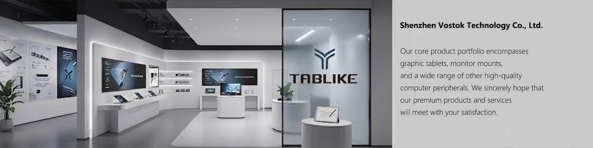

Download
M12 pen display driver
M12 PenTabletDriver Mac_ 1.0.0.1.pkg
M12 PenTabletDriver Win1.0.0.2.exe
M12 Pen Display Quick Start Guide.pdf
T605 pen tablet driver
T605 Tablet Driver macos.dmg
T605 Tablet Driver Windows 4.7.1.1031.zip
T605 Pen Tablet Quick Start Guide.pdf
K809 keyboard driver
Soft download
